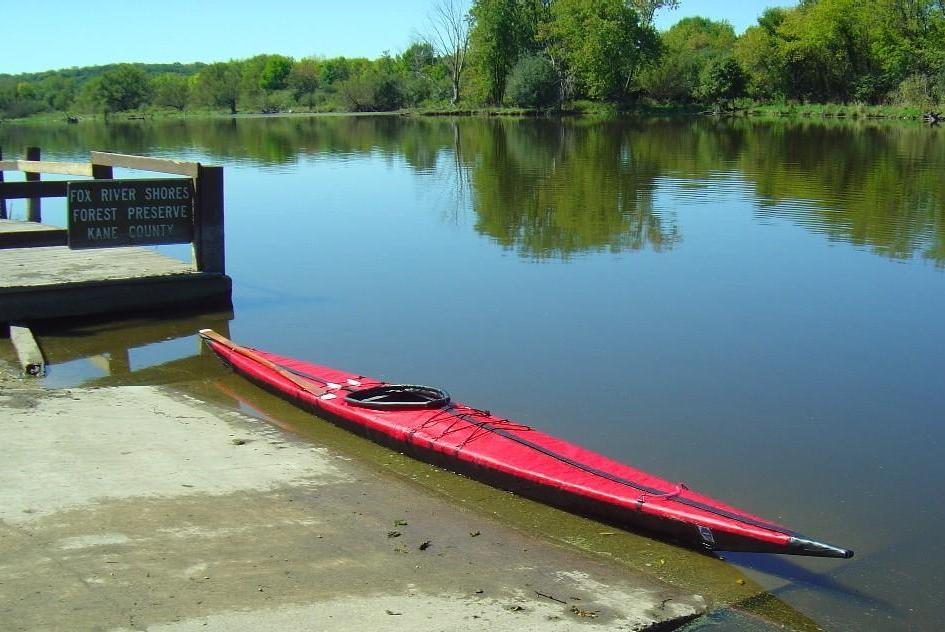

Sea Ranger by Vincent Leung (US)
Menu
Last Page
Next Page

Vincent, from Chicago, Illinois has completed a Sea Ranger LC. He earlier completed both a
Sea Cruiser and Sea Tour 15.
Use the
(BACK)
key to return.